Vextaro
A men's luxury formalwear rental app. Renters can't try garments on before they ship, so fit uncertainty blocks booking.
Fit anxiety, not selection
- 10+ competitive audits and desk research (reviews, return rates)
- Renters wanted a second opinion on fit, not more options
- An outfit is a connected system, so fit became the product opportunity
Eight weeks: from blank canvas to engineering hand-off
I structured the 8-week capstone around staged milestones, collaborating with Claude and custom tooling each week:
| Week | Focus | Key Deliverable | AI Toolkit |
|---|---|---|---|
| W1 | Workspace & Toolkit | Figma workspace & capstone scope setup | Claude |
| W2 | Research Synthesis | Marcus persona & emotional journey map | Claude |
| W3 | IA & Core Flows | 7-section IA & primary booking user flows | Claude |
| W4 | "Kill Your Darlings" Cut-down | Pruned secondary features to protect core fit checkpoint | Claude |
| W5 | Wireframes (AI vs Hand-built) | Hand-built wireframes & fit-check flow | Claude, Figma AI Agent |
| W6 | Design System Foundations | Token variables, 9 components, 35 variants | Claude, Scripter Scripts |
| W7 | Accessibility & Polish | Hi-fi screens, 15-check WCAG 2.2 AA audit | Claude, Scripter Scripts |
| W8 | Engineering Hand-off Package | Annotated redlines, component index & tokens | Claude, Scripter Scripts |
Marcus and his journey
Built from desk research: competitor reviews, return-rate data, style guides.
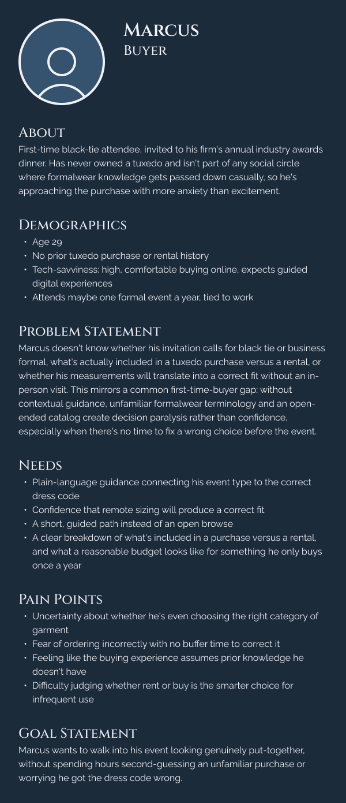

From complaint to checkpoint

Information architecture & recovery flows
I structured a 7-section information architecture to organize formalwear cataloging, fitting appointments, and booking milestones, paired with a dedicated recovery user flow with specialist escalation paths.
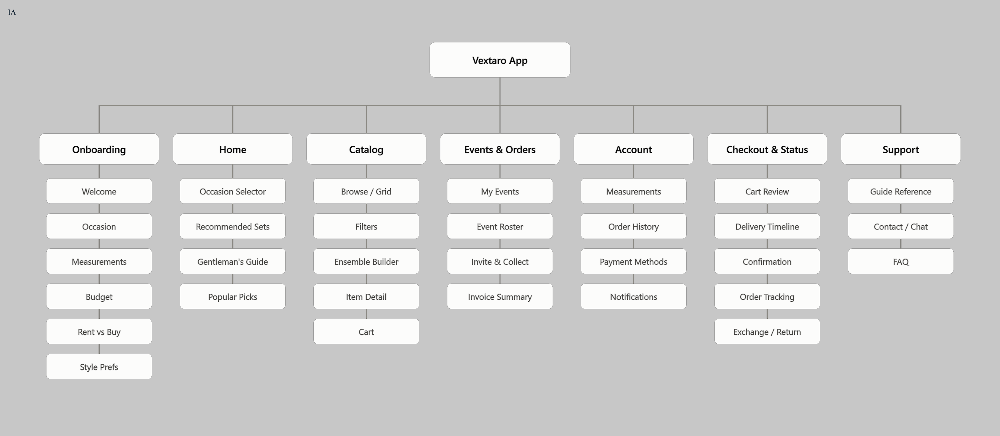

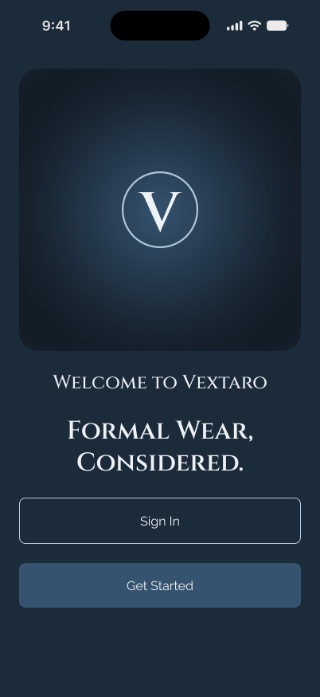
High-fidelity screens
From welcome to checkout, built on the token system: onboarding with a fit quiz, sign-in, occasion-first discovery, filtered cataloging, and rent-or-buy product pages with a sticky action bar.
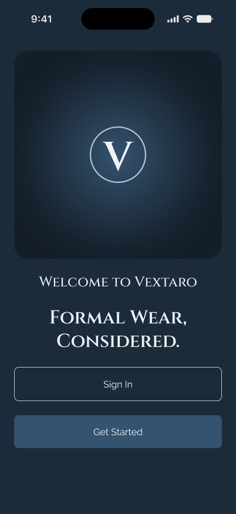
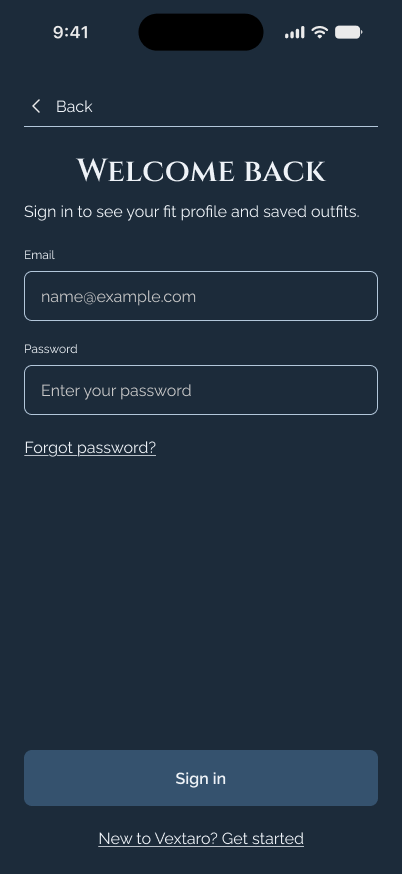
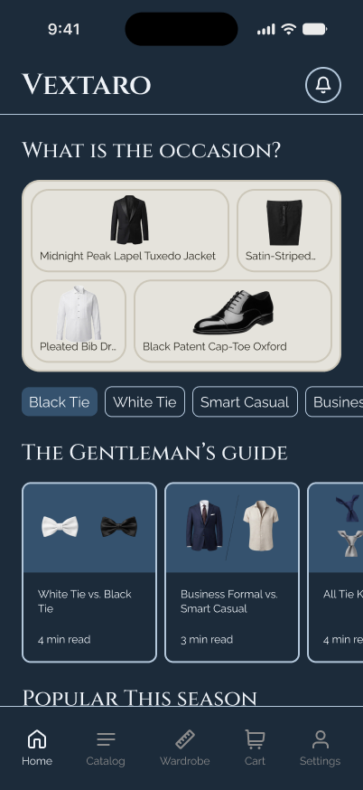
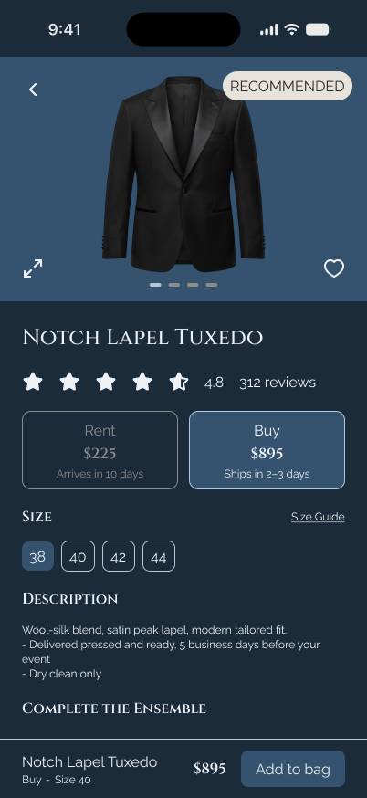
Measurements, sized the way clothes are
A measurements editor replaces typing numbers. Each field steps the way that item is actually sized.
- Eight measurements: height, chest, neck, sleeve, waist, inseam, shoe size, hat size
- Steps of 1 inch, 0.5 for neck and shoe size, 1/8 for hat size
- Minus and plus buttons with a clear Cancel and Confirm
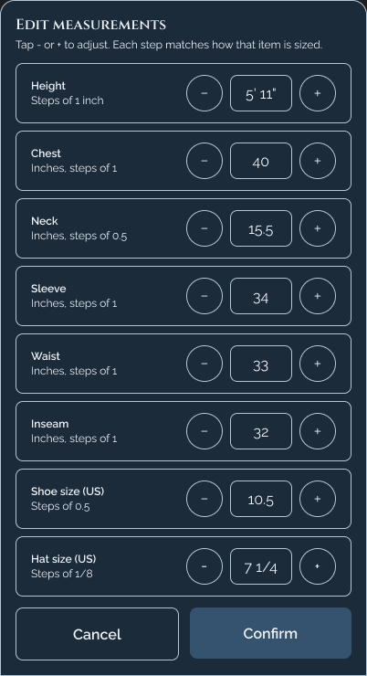
An AI fit estimate, as a concept
Vextaro has no automated AI sizing today. I designed one as a labeled concept to explore how algorithmic suggestions can build user trust through transparency rather than unearned authority.
- Explicit confidence ratings with understandable reasoning.
- Always correctable: "Edit measurements", "Not my size", or "Ask a specialist".
- Error states for low confidence and slow server responses.
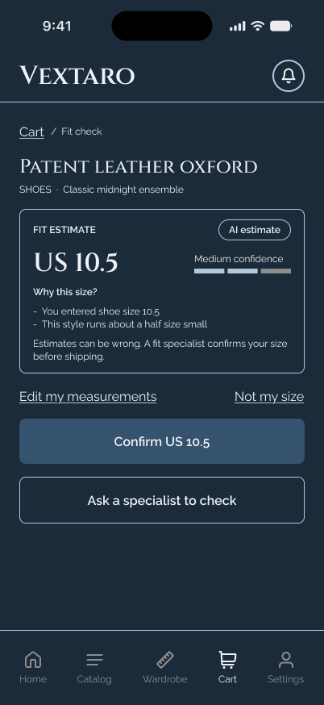
Designed for the unhappy path
Catalog, cart, and wardrobe each have dedicated loading, empty, and error states so no user journey ends at a dead-end blank screen:
- Catalog states: Skeleton shimmer loading, zero-results filter reset, and API network failure with offline retry.
- Cart & Wardrobe states: Empty garment shelf with direct CTA to occasion-based browsing, reserved-item expiration timer, and payment retry.
- Prototype coverage: All 9 states wired into a clickable high-fidelity Figma flow: welcome, quiz, occasion home, filtered catalog, product details, fit-check, and cart.
Accessibility pass, fixed at the token level
I computed contrast from token hex values, then audited 15 checks against WCAG 2.2 AA standards: 7 passed initially, 5 were resolved at the token level, and 3 engineering edge cases were documented.
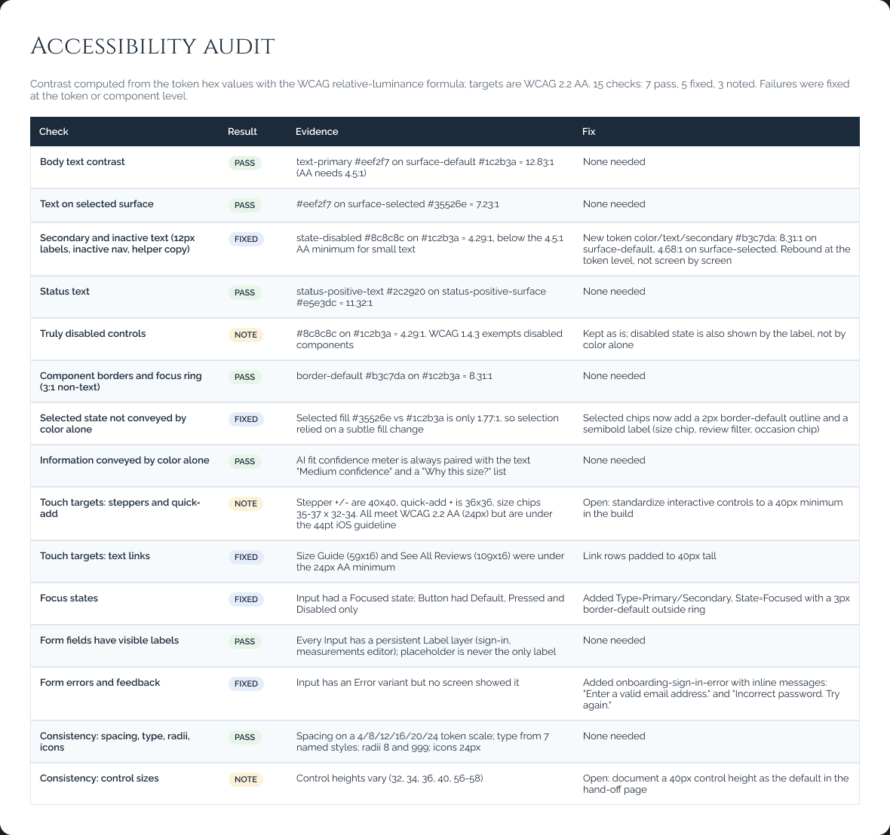
Engineering hand-off
The final design deliverable is an engineering hand-off specification package built so developers can implement screens without ambiguity. Five key screens are annotated with numbered redlines, responsive behavior, and edge cases:
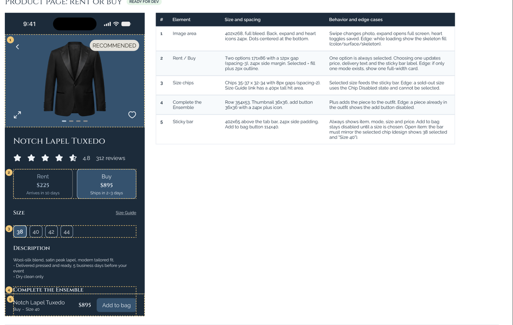
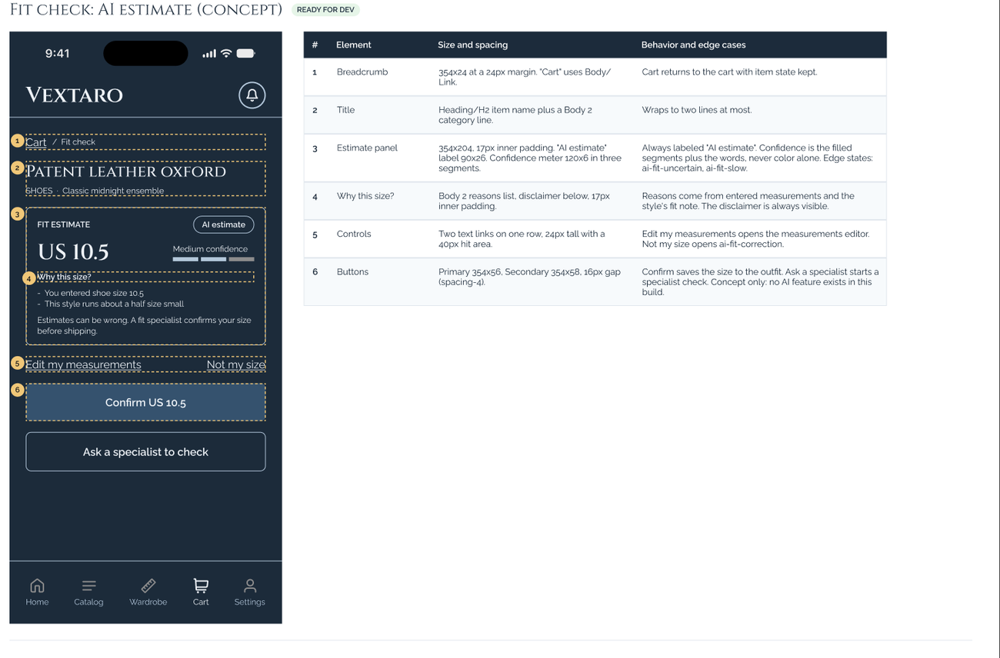
- Annotated screens: Product page, fit check, measurements editor, sign-in (with error state), and cart checkout.
- Component index: Comprehensive table documenting 9 master components and 35 variants with interaction guidelines.
- Production asset exports: Vector SVGs and raster PNGs configured at 1x, 2x, and 3x densities.
- Prototype QA: Complete navigation flow validated with zero dead-ends or broken transitions across all branches.
- Documented edge cases: Open architectural decisions explicitly logged in Figma for engineering review.
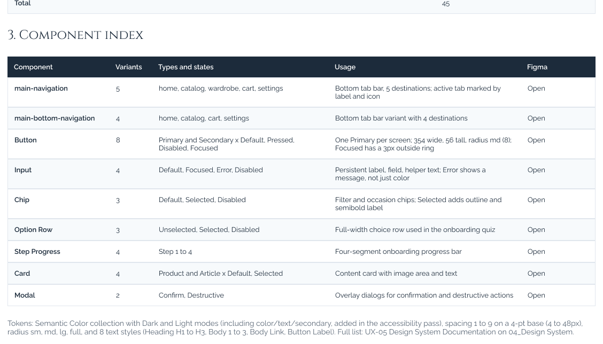
AI integration log: Three scripts that saved hours, one that taught me more
Rather than letting AI generate arbitrary designs, I wrote Scripter scripts (JavaScript via the Figma Plugin API) and directed Claude to automate repetitive, error-prone production tasks:
Assemble screens from components
Wrote a Scripter script to programmatically assemble 4 new views and 9 state screens directly from master components, followed by manual design QA on every screen.
Semantic layer renaming for hand-off
Automated consistent layer naming across the entire file so developers receive clean, semantic frame trees without hours of manual renaming.
Automated token contrast audit
Extracted token hex values into Claude to calculate WCAG contrast ratios. Exposed a failing light-mode secondary text value (4.29:1) and resolved it at the token level (8.31:1).
The Failed Prompt & Technical Lesson
An AI-generated script called figma.createAutoLayout, which does not exist in the Figma Plugin API, causing a runtime crash. I diagnosed the error, debugged the script, and replaced it with a custom createFrame helper. Lesson: Always test automation scripts on isolated sandbox frames before running them globally.
A system built to scale
Rather than designing disconnected mockups, I established a centralized Figma token architecture to ensure consistency, accessibility, and smooth developer handoff across the entire rental experience:
- Token hierarchy: Centralized Figma variables mapping primitive hex values to semantic roles (surface, brand, text, interactive states) across light and dark contexts.
- Interactive variants: Standardized states (default, hover, active, focus, error, disabled) across bottom sheets, occasion selector chips, and sticky booking bars.
- Production-ready handoff: Complete component index paired with numbered spatial redlines so frontend engineers can build without guesswork.
Three learnings and one hard problem
1. Fix it at the token level
A single contrast fix in a token corrected every component and variant across light and dark modes.
2. AI builds fast, I decide
Exercised strict editorial restraint: rejected an arbitrary AI type-scale rescale, rejected a full-width Swap button, and rejected synthetic AI imagery in favor of real curation.
3. Design the unhappy path
Uncertain, slow-loading, and error correction states matter as much as the happy path.
The Hard Problem: Trust as a design hypothesis
Challenge: Making an AI fit estimate trustworthy in a conceptual prototype without an active production machine learning model.
Solution: Clearly labeled the recommendation as an "AI estimate", exposed transparent reasoning ("Why this size?"), and provided immediate manual escape hatches (Edit measurements, Not my size, Ask a specialist). Because it is not yet tested in live production, trust remains a rigorous design hypothesis to be validated with real renters.
Production readiness & next steps
With the core token architecture, accessibility audit, and engineering handoff completed, the project is structured for production implementation. Next steps for the engineering rollout:
- Engineering alignment: Review open edge-case decisions in Figma (such as dynamic sticky-bar size display vs. unconfirmed fit lock at checkout).
- Token compilation: Export Figma variables into design token JSON / CSS custom properties for direct ingestion into the frontend codebase.
- Post-launch usability testing: Track checkout drop-off rates on the specialist fit checkpoint to validate reduction in fit-related rental returns.